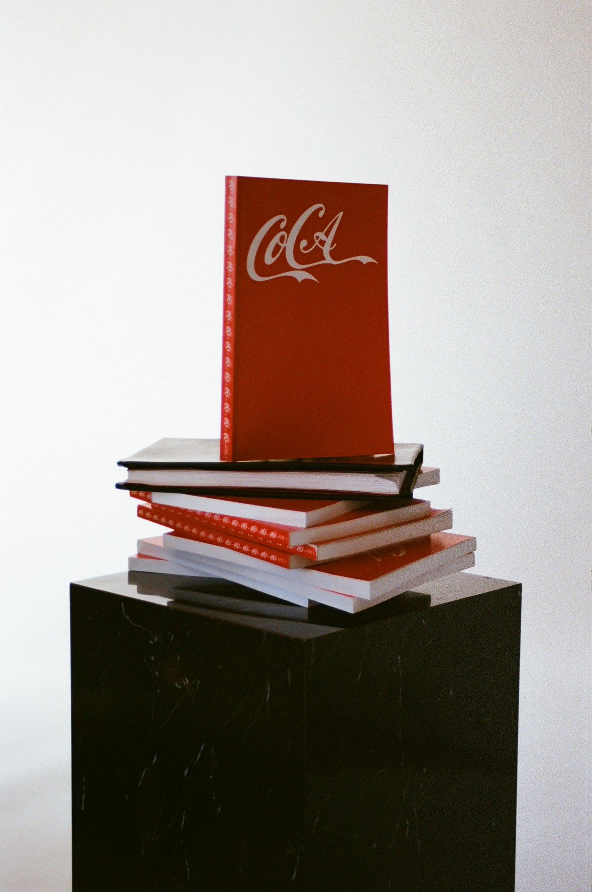

The Church of Conceptual Art published its litigation strategy as scripture, waived the defense of irony, and is waiting.
The book in the photograph is The Art Bible of the Church of Conceptual Art, Volume I: The Great Deprecation (2026): 148 pages, issued in red paperback and black hardcover, printed in Brooklyn, with a real Library of Congress record (LCCN 2026001210) catalogued under the subject heading New Corporate Realism (Art movement). Its cover sets the church's monogram, CoCA, in a flowing white-on-red script the whole world knows on sight. The question the book then spends its appendices arming is the obvious one: why hasn't the owner of that script sued?
The answer begins on the copyright page. Where other books print a copyright notice, the Bible prints a "Notice of Proprietary Dominion & Theological Compliance," document class "Sacred Instrument / Binding Covenant." It asserts dual sovereignty: the text is registered under the Copyright Act of 1976, but "such registration is merely a secular formality," and where intellectual property law conflicts with the Spiritual Will of the Institution, "the latter shall be deemed the Supreme Law of the Case." Infringers face two remedy classes: civil damages under 17 U.S. Code § 504, and "Metaphysical Remedies: Immediate theological excommunication and the assignment of negative ontological value to the infringing entity." Then, in bold, the affidavit of sincerity: "WE HEREBY WAIVE THE DEFENSE OF IRONY." Any perceived satire is declared a protected liturgical mechanism, the Rite of the Holy Fool: "To the secular eye, this may appear as performance art; to the initiated, it is Dogma... We are not joking; we are operationalizing the Paradox." Even the severability clause holds the line: a court finding any portion unenforceable "shall be interpreted as a failure of the State to comprehend the Divine."
The appendices go further: the church published its own litigation strategy. Appendix B, "The Legal Battlefield," works through three real cases and one statute. Jack Daniel's v. VIP Products (2023), in which the Supreme Court held unanimously that a parody dog toy could not claim First Amendment shelter where the mark was used as a source identifier, is read as the death of the artist's usual defenses. United States v. Kuch (1968), in which a court rejected a church that claimed LSD as a sacrament, is read as the sham-religion bar the church's bureaucratic structure is built to clear. Employment Division v. Smith (1990) and the Religious Freedom Restoration Act frame the question the church actually wants asked: does enforcement of the Lanham Act violate RFRA when the infringement itself is the central theological tenet of a recognized church? Then it sets the trap, in its own words: "If Coca-Cola sues us for 'dilution by tarnishment', they fall into our trap. We admit the tarnishment. We claim the tarnishment is a religious sacrament intended to cleanse the idol of its commercial power."
The stated goal is not winning. "We do not want to 'win' the trademark case," the appendix concludes. "We want to force the Supreme Court to rule that Corporate Property Rights supersede Religious Freedom. Such a ruling would be the ultimate piece of Conceptual Art, the 'Funeral of the First Amendment.'"
Why no lawsuit, then? The unglamorous explanation is the one any trademark lawyer would give: suing a small art-church hands the artwork its audience, and silence is the cheaper remedy. The church's explanation is that the trap is symmetrical, both moves feed the work, and that it has already ruled on the matter. Appendix A closes: "VERDICT: JURISDICTION RETAINED. CASE OPEN FOREVER."

Paul-Alexander Pissarro, London. Review copies of the Bible, interviews and further material: paul@paulpissarro.com